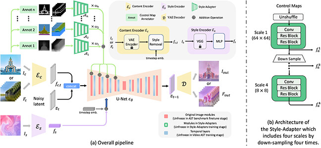
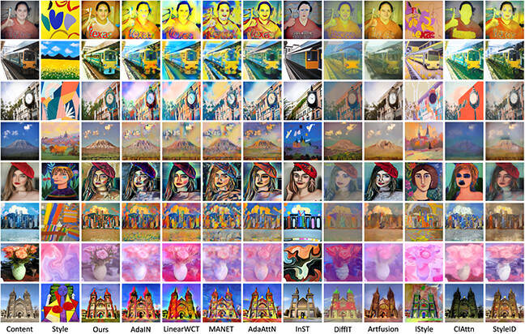
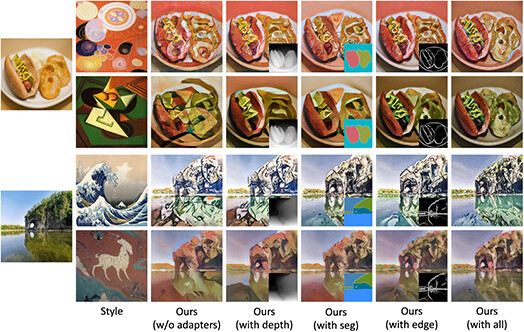
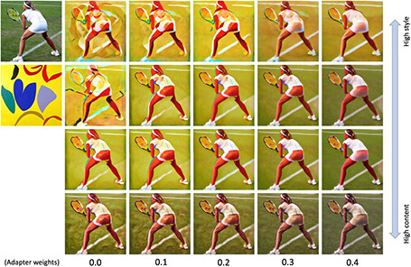
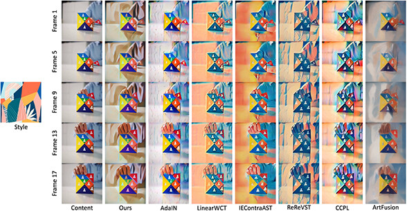

FAST: Flexibly Controllable Arbitrary Style Transfer via Latent Diffusion Models
Your content. Any style. Flexible control.
Volume 21 · Issue 9 · Article 268 · September 2025
Earlier work: HiCAST on arXiv (2024).
Style transfer, with finer control.
Arbitrary styles
Condition a latent diffusion model on a content image and a style reference to create a new stylization.
Composable control
Combine depth, segmentation, and edge guidance with Style-Adapters to preserve the details that matter.
Consistent video
Extend stylization across frames with temporal layers and a Harmonious Consistency training objective.
Abstract
The goal of Arbitrary Style Transfer (AST) is injecting the artistic features of a style reference into a given image/video. Existing methods usually pursue the balance between style and content by adjusting general coarse-level stylized strength, thereby leading to unsatisfactory results and hindering their practical application. To address this critical issue, a novel AST approach namely Flexibly Controllable Arbitrary Style Transfer (FAST) is proposed, which is capable of explicitly customizing the stylization results according to various sources of semantic clues. In the specific, our model is constructed based on Latent Diffusion Model (LDM) and elaborately designed to absorb content and style instances as conditions of LDM. It is characterized by introducing Style-Adapter, which allows users to flexibly manipulate the stylization results via aligning multi-level style control information and intrinsic knowledge in LDM, meanwhile enhancing the model with improved capacity to harmonize content detail retention and stylization strength. Lastly, our model is extended to handle video AST task. A novel learning objective is leveraged for video diffusion model training, which considerably improves cross-frame temporal consistency on the premise of maintaining stylization strength. Qualitative and quantitative comparisons as well as user studies demonstrate our presented approach outperforms the existing SoTA methods in generating visually plausible stylization results.
A diffusion backbone. Composable adapters.
Content and style encoders condition the diffusion U-Net. Style-Adapters inject structural guidance, while temporal layers extend the framework from images to videos.

From artistic images to stylized video.
Selected qualitative results from the published paper. Follow each figure link to inspect the details at full size.
Image style transfer
FAST transfers the appearance of a style reference while retaining the structure of the content image.

Control what stays. Choose what changes.
Depth, semantic segmentation, and edge maps provide complementary guidance. Their adapters can be combined to customize the result.

Explore guidance strength and adapter weights
Classifier-free guidance factors and adapter weights offer further control over content preservation and stylization.

Video style transfer
Temporal layers and Harmonious Consistency loss encourage coherence between frames while preserving the transferred style.

Figures 1, 2, 4, 6, 7, and 8 from Wang et al., ACM TOMM (2025). See the paper for evaluation settings and quantitative comparisons.
Cite this work
If you find FAST useful in your research, please cite our paper.
@article{wang2025fast,
title = {{FAST}: Flexibly Controllable Arbitrary Style Transfer via Latent Diffusion Models},
author = {Wang, Hanzhang and Wang, Haoran and Yu, Zhongrui and Sun, Mingming and Jiang, Junjun and Liu, Xianming and Zhai, Deming},
journal = {ACM Transactions on Multimedia Computing, Communications, and Applications},
volume = {21},
number = {9},
articleno = {268},
numpages = {20},
year = {2025},
month = sep,
publisher = {Association for Computing Machinery},
doi = {10.1145/3748655},
url = {https://doi.org/10.1145/3748655}
}DOI: 10.1145/3748655